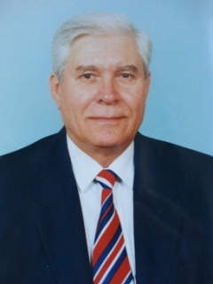
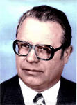

Те, кого с нами уже нет
Муха Валентин Павлович (1938–2010), зав. кафедрой 1995–2003 гг.

Кандидат технических наук, профессор кафедры “Электроснабжения промышленных ппредприятий и городов” Донецкого национального технического университета, Отличник образования Украины, выпускник Зуевского энергетического техникума 1958 года по специальности “Котельные, паротурбинные установки и автоматизации тепловых процессов”.
1955–1958 — учился в ЗЭТ 1958–1961 — служба в советской Армии; (Немецкая демократическая республика) 1961–1966 — учился в Донецком политехническом институте 1966–1968 — ассистент кафедры “Электрические сети и системы” 1968–1971 — учился в аспирантуре в Ростовском-на-Дону институте железнодорожного транспорта 1971–2009 — работа в должности ассистента, старшего преподавателя, доцента и профессора кафедры “Электроснабжения промышленных предприятий и городов” 1986–1995 — декан вечернего факультета ДПИ (ДонНТУ) 1995–2003 — зав. кафедры “Электроснабжения промышленных предприятий и городов” ДонНТУ 2003–2010 — профессор кафедры “Электроснабжения промышленных предприятий и городов” ДонНТУ.
Муха Валентин Павлович с 1966 г. по 1968 г. работал ассистентом кафедры “Электрические сети и системы”. В период с 1968 г. по 1971 г. учился в аспирантуре в Ростовском институте железнодорожного транспорта. Руководителем кандидатской диссертации Мухи В.П. был всемирно известный специалист в области моделирования электрических нагрузок на промышленных предприятиях д.т.н. профессор Каялов Г.М. В 1975 г. Валентин Павлович защитил кандидатскую диссертацию на тему: “Вопросы теории и расчета электрических нагрузок и потерь напряжения в сетях контактной электросварки” в Ереванском политехническом институте.
Основные направления его научной деятельности:
- расчет электрических нагрузок,
- компенсация реактивной мощности,
- надежность систем электроснабжения.
За время работы в ДонНТУ Валентином Павловичем было опубликовано 65 научных статей и методических пособий, получено 2 авторских свидетельства на изобретения.
Всю свою педагогическую деятельность (с 1966 г. по 2010 г.) Валентин Павлович посвятил обучению и воспитанию студентов, как прекрасный методист, в совершенстве владеющий тонкостями преподавательской деятельности, прекрасно читал лекции. По всем читаемым им дисциплинам были лучшие конспекты лекций на кафедре ЭПГ. Валентин Павлович заслужил уважение студентов, сотрудников кафедры, факультета, института, с которыми ему приходилось сотрудничать в процессе трудовой деятельности.
За выдающиеся успехи в проведении учебного процесса Валентин Павлович был награжден знаком: “Отличник образования Украины”.
Разгильдеев Генадий Инокентьевич, зав. кафедрой 1979–1981 гг.

Заслуженный деятель науки и техники РСФСР, доктор технических наук, профессор, академик РАЕН, академик РИА, специалист в области надежности и безопасности систем электроснабжения горных предприятий.
Возглавлял кафедру ЭПГ в течение двух лет с 1979 г. по 1981 г.
За время работы Геннадия Иннокентьевича на кафедре ЭПГ им была опубликована 21 научная статья, получено 12 авторских свидетельств на изобретения и под его руководством аспирант кафедры ЭПГ Ковалев Александр Петрович защитил кандидатскую диссертацию. Ассистент Олейник В.Г. переведен в должность доцента кафедры ЭПГ.
В послужном списке Разгильдеева Г.И. свыше 270 печатных работ в научно-технических изданиях, в том числе 23 монографии и учебных пособия, им получено 40 авторских свидетельств и патентов на изобретения. Под его руководством защищены 31 кандидатская и 4 докторских диссертаций.
В настоящее время Генадий Инокентьевич плодотворно трудится в КузГТУ на созданной им кафедре “Электрификация и автоматизация горных работ” в качестве профессора кафедры.
Совпель Валерий Борисович, зав. кафедрой 1975–1979 и 1986–1995 гг.
За время руководства кафедрой кандидат технических наук, доцент Совпель Валерий Борисович проявил себя, как мудрый и талантливый руководитель и организатор научных исследований. На кафедре ЭПГ велись значительные хоздоговорные работы с такими предприятиями: Авдеевский коксохимзавод (рук. к.т.н. доц. Совпель В.Б.), Ямбургское газопромысловое управление (Россия, рук. к.т.н. Ковалев А.П.), РЭС «Сахалинэнерго» (г. Южносахалинск), Усть-Илимская ГЭС (рук. к.т.н. доц. Меркулов О.Н.) и многие другие.
Общий объем хоздоговорных работ кафедры ЭПГ в разные годы колебался в пределах 350–450 тыс.руб. в год. Научно-исследовательский сектор кафедры насчитывал до 15 человек инженеров (самый большой на факультете). Направление научной деятельности Совпеля В.Б. – совершенствование методов анализа электромеханических переходных процессов в электрических машинах и сетях. За период руководства кафедрой ЭПГ Совпелем В.Б. опубликована 61 статья в научных журналах и получено 4 авторских свидетельства на изобретения.
Что же касается учебного процесса, то на кафедре он был организован на высоком методическом и научном уровне. На кафедре проводились ежемесячные научные и методические семинары, на которых преподаватели кафедры делились искусством проведения лекций, обсуждались и корректировались темы лекций по читаемым курсам, дискутировались новые научные результаты, полученные сотрудниками кафедры.